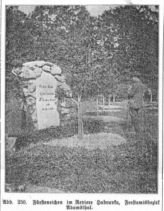
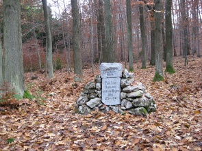
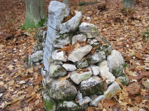
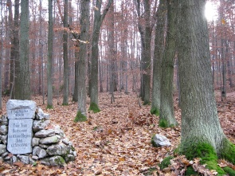
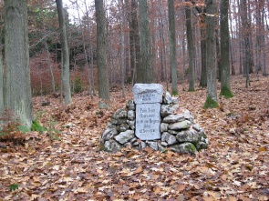
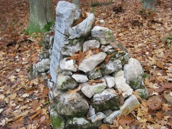
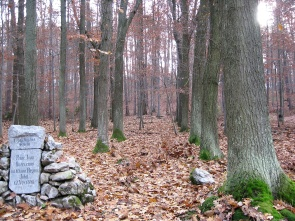

| Lage des Ortes: | nordöstlich von Brno, nordwestlich von Křtiny. |
| Bezirk: | Blansko |
| Herrschaft: | Posořitz (Pozořice) |
| Evidenznummer: | 003a, 003b |
| Abmessungen: | der große Stein 71 x 48 x 14 cm, der kleine Stein 43 x 60 x 29 cm. |
Beschreibung:
Zwei Gedenksteine (40. und 50. Regierungsjubiläum des Fürsten) in einem "Hügelchen" aus nicht bearbeiteten Steinen.
Ursprünglich war der große Gedenkstein Bestandteil eines gemauerten Denkmals, was eine alte Fotografie aus dem Jahr 1903 beweist.
2009 wurde das Denkmal renoviert.
Der große Gedenkstein aus dem Jahr 1898 trägt folgende lateinische Inschrift:
„Princ. Joan Quercetum ad 40. ann. Regim. Jubil. 12. Nov. 1898.“
Auf dem kleineren Stein ist folgende deutsche Inschrift aufgeführt: „L jähr. Reg. Jubil. MCMVIII“.
In der Umgebung des Denkmals ist der Eichenbestand symmetrisch angeordnet.
Das Denkmal steht nördlich von Habrůvka, nicht weit von dem grün markierten Wanderweg aus Křtiny.
Fotografie aus dem Jahr 1903 (Oesterreichische Forst- und Jagd-Zeitung, Jg. 21, Nr. 39, S. 327):

11. 2009 - SO. Zustand nach Renovierung.
 





Verweise auf externe Web-Seiten:
http://www.habruvka.info/okoli.htm/ - Denkmäler in der Umgebung von Habrůvka.
{kind=link}
{kind=link}
{kind=link}
{kind=link}
{kind=link}
{kind=link}
{kind=link}